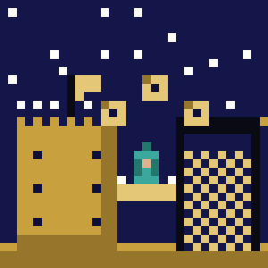

Series
30 Things I Wish I Knew
Expanded from a LinkedIn series — lessons from a decade in fleet management and BI consulting, now being carried into the GRC pivot.
2 posts →

Series
30 Things I Wish I Knew — 2026
A fresh pass on the same format, updated for where the BI-to-GRC pivot stands this year.
0 posts →
[ add Microsoft.png ]';">
Series
Microsoft
Notes from the Power BI, Fabric, and broader Microsoft certification track.
0 posts →

Series
Palo Alto
PCNSE study notes and field lessons from the network security track.
0 posts →

[ add other.png ]';">Series
Other
Everything that doesn't fit neatly into a named track yet.
0 posts →